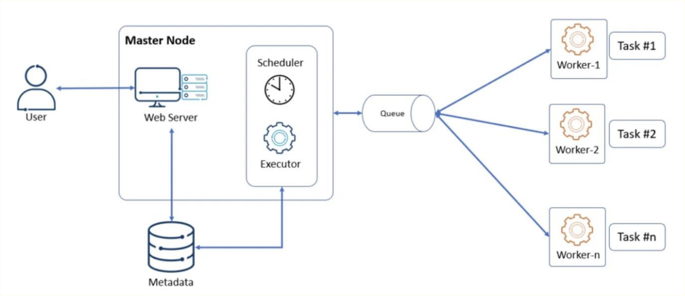
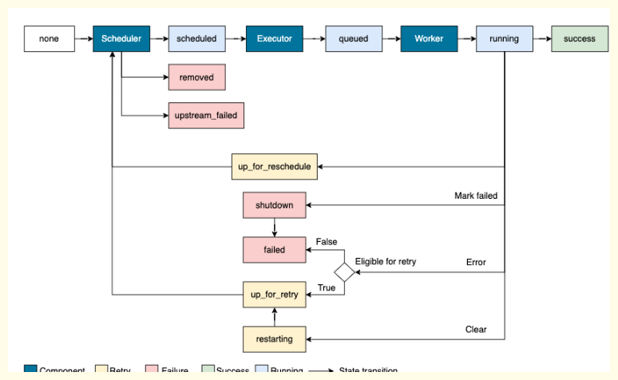
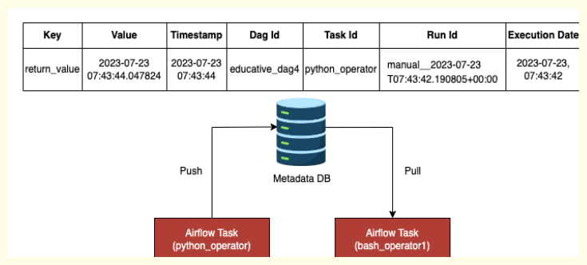

Apache Airflow
What is Orchestration in BigData?#
Orchestration in big data refers to the automated configuration, coordination, and management of complex big data systems and services. Like an orchestra conductor ensures each section of the orchestra plays its part at the right time and the right way to create harmonious music, orchestration in big data ensures that each component of a big data system interacts in the correct manner at the right time to execute complex, multi-step processes efficiently and reliably.
--- Workflow management
It defines, schedules, and manages workflows involving multiple tasks across disparate systems. These workflows can be simple linear sequences or complex directed acyclic graphs (DAGs) with branching and merging paths.
--- Task scheduling
Orchestration tools schedule tasks based on their dependencies. This ensures that tasks are executed in the correct order and that tasks that can run in parallel do so, increasing overall system efficiency.
--- Failure handling
Orchestration tools handle failures in the system, either by retrying failed tasks, skipping them, or alerting operators to the failure.
------------------------------------------------------------------------------------------------------------
Need of Workflow management while Designing Data Pipelines#
--- Ordering and Scheduling
Data processing tasks often have dependencies, meaning one task needs to complete before another can begin. For example, a task that aggregates data may need to wait until the data has been extracted and cleaned. A workflow management system can keep track of these dependencies and ensure tasks are executed in the right order.
--- Parallelization
When tasks don't have dependencies, they can often run in parallel. This can significantly speed up data processing. Workflow management systems can manage parallel execution, maximizing the use of computational resources and reducing overall processing time.
--- Error Handling
If a task in a data pipeline fails, it can have a knock-on effect on other tasks. Workflow management systems can handle these situations, for instance by retrying failed tasks, skipping them, or stopping the pipeline and alerting operators.
--- Visibility and Monitoring
Workflow management systems often provide tools for monitoring the progress of data pipelines and visualizing their structure. This can make it easier to spot bottlenecks or failures, and to understand the flow of data through the pipeline.
--- Resource Management
Workflow management systems can allocate resources (like memory, CPU, etc.) depending on the requirements of different tasks. This helps in efficiently utilizing resources and ensures optimal performance of tasks.
------------------------------------------------------------------------------------------------------------
What is AirFlow?#
Apache Airflow is an open-source platform that programmatically allows you to author, schedule, and monitor workflows. It was originally developed by Airbnb in 2014 and later became a part of the Apache Software Foundation's project catalog.
Airflow uses directed acyclic graphs (DAGs) to manage workflow orchestration. DAGs are a set of tasks with directional dependencies, where the tasks are the nodes in the graph, and the dependencies are the edges. In other words, each task in the workflow executes based on the completion status of its predecessors.
--- Key features of Apache Airflow include
- Dynamic Pipeline Creation - Airflow allows you to create dynamic pipelines using Python. This provides flexibility and can be adapted to complex dependencies and operations.
- Easy Scheduling - Apache Airflow includes a scheduler to execute tasks at defined intervals. The scheduling syntax is quite flexible, allowing for complex scheduling.
- Robust Monitoring and Logging - Airflow provides detailed status and logging information about each task, facilitating debugging and monitoring. It also offers a user-friendly UI to monitor and manage the workflow.
- Scalability - Airflow can distribute tasks across a cluster of workers, meaning it can scale to handle large workloads.
- Extensibility - Airflow supports custom plugins and can integrate with several big data technologies. You can define your own operators and executors, extend the library, and even use the user interface API.
- Failure Management - In case of a task failure, Airflow sends alerts and allows for retries and catchup of past runs in a robust way
------------------------------------------------------------------------------------------------------------
Airflow Architecture#

--- Scheduler
The scheduler is a critical component of Airflow. Its primary function is to continuously scan the DAGs (Directed Acyclic Graphs) directory to identify and schedule tasks based on their dependencies and specified time intervals. The scheduler is responsible for determining which tasks to execute and when. It interacts with the metadata database to store and retrieve task state and execution information.
--- Metadata Database
Airflow leverages a metadata database, such as PostgreSQL or MySQL, to store all the configuration details, task states, and execution metadata. The metadata database provides persistence and ensures that Airflow can recover from failures and resume tasks from their last known state. It also serves as a central repository for managing and monitoring task execution.
--- Web Server
The web server component provides a user interface for interacting with Airflow. It enables users to monitor task execution, view the status of DAGs, and access logs and other operational information. The web server communicates with the metadata database to fetch relevant information and presents it in a user-friendly manner. Users can trigger manual task runs, monitor task progress, and configure Airflow settings through the web server interface.
--- Executors
Airflow supports different executor types to execute tasks. The executor is responsible for allocating resources and running tasks on the specified worker nodes.
Example
the local executor executes tasks on the same node as the scheduler, while the Kubernetes executor executes tasks in containers.
--- Worker Nodes
Worker nodes are responsible for executing the tasks assigned to them by the executor. They retrieve the task details, dependencies, and code from the metadata database and execute the tasks accordingly. The number of worker nodes can be scaled up or down based on the workload and resource requirements.
--- Message Queue
Airflow relies on a message queue system, such as RabbitMQ, Apache Kafka, or Redis, to enable communication between the scheduler and the worker nodes. The scheduler places task execution requests in the message queue, and the worker nodes pick up these requests, execute the tasks, and update their status back to the metadata database. The message queue acts as a communication channel, ensuring reliable task distribution and coordination.
--- The DAG Processor
It processes DAG files and stores the metadata in the database. It scans the DAG folder every 30 seconds (default) to look for new or updated files. It uses DagFileProcessorManager to detect changes and DagFileProcessorProcess to parse the actual code. To speed up parsing, import statements and variables should be placed inside methods rather than at the top of the script.In newer versions, the DAG Processor is separated from the Scheduler to allow independent scaling and prevent CPU bottlenecks
--- Triggerer
Introduced to handle long-running tasks. Normally, long tasks block the Scheduler's task slots. The Triggerer allows a task to enter a "Deferred" state. It uses a small asynchronous Python code to "watch" the task while the Worker does the heavy lifting, freeing up the Scheduler's pool for other tasks
--- Airflow 3.0: The New Client-Server Architecture
The most significant architectural shift in Airflow 3.0 is the removal of direct database access for several components.
- Server Side - Only the Scheduler and the API Server can communicate directly with the Database.
- Client Side - The DAG Processor, Worker, and Triggerer are now "clients." They cannot talk to the DB directly.
- Communication Flow-
- The DAG Processor parses a DAG and sends the info to an Internal API Server.
- The API Server writes that info into the DB.
- The Scheduler reads from the DB and triggers the task.
- If a task is deferred, the Triggerer updates the status via the API Server to the DB.
--- Worker Execution Flow
- Task Submission - The Scheduler identifies a task that needs to run and hands it to the Executor. The Executor then submits a message containing the execution command to a Broker/Queue (typically Redis).
- Message Pulling - The Worker Process constantly monitors the Redis queue. When a message appears, the Worker pulls the message to begin the job.
-
Internal Hierarchy - Once a message is pulled, the execution follows an internal hierarchy within the worker machine to isolate the task.
- Worker Process: The main process that communicates with the queue.
- Worker Child Process: A sub-process spawned for a specific task.
- Local Task Process: An internal process dedicated to that specific instance.
- Task Runner: The final layer that executes the actual code (e.g., echo copying file).
-
Result Reporting - After the Task Runner completes the work, it writes the task status (Success/Failure) to the Result Backend.
- Database Update - The Scheduler reads the status from the Result Backend and updates the primary Postgres Metadata Database so the status can be reflected in the Airflow UI
------------------------------------------------------------------------------------------------------------
DAGs and Tasks#
DAGs are at the core of Airflow’s architecture. A DAG is a directed graph consisting of interconnected tasks. Each task represents a unit of work within the data pipeline. Tasks can have dependencies on other tasks, defining the order in which they should be executed. Airflow uses the DAG structure to determine task dependencies, schedule task execution, and track their progress.
Each task within a DAG is associated with an operator, which defines the type of work to be performed. Airflow provides a rich set of built-in operators for common tasks like file operations, data processing, and database interactions. Additionally, custom operators can be created to cater to specific requirements. Tasks within a DAG can be triggered based on various events, such as time-based schedules, the completion of other tasks, or the availability of specific data.
In Airflow, there's a task which perform 1 unique job across the DAG, the task is usually calling Airflow Operator.
An operator is essentially a Python class that defines what a task should do and how it should be executed within the context of the DAG.
- Operators can perform a wide range of tasks, such as running a Bash script or Python script, executing SQL, sending an email, or transferring files between systems.
- Operators provide a high-level abstraction of the tasks, letting us focus on the logic and flow of the workflow without getting bogged down in the implementation details.
- Apache Airflow has several types of operators that allow you to perform different types of tasks.
--- Why use Airflow/DAGs instead of Simple Scripts
A common question is why one shouldn't just use a Python for loop or sequential method calls.
- Parallel Task Execution - If you need to fetch data from 50 different APIs, a sequential script might take 4 minutes (5 seconds each). Airflow can run these tasks in parallel, reducing the total time to just 5 seconds.
- Granular Re-runs (Error Handling) - In a sequential script, if the "Clean" step fails after a 2-hour "Fetch" step, you might have to restart everything. In an Airflow DAG, you can re-trigger only the failed task (the "Clean" step) without re-running the successful "Fetch" step, saving time and resources
--- Create a DAG
Different Styles of Writing DAGs
- Classic Way: Defining the DAG object and passing it to tasks (shown above).
- Context Manager (with): Automatically associates tasks with the DAG without passing dag=dag to every operator.
- TaskFlow API: Uses decorators like @dag and @task
A DAG file starts with a dag object. We can create a dag object using a context manager or a decorator.
from airflow.decorators import dag
from airflow import DAG
import pendulum
from airflow.providers.standard.operators.bash import BashOperator
from airflow.providers.standard.operators.python import PythonOperator
# dag1 - using @dag decorator
@dag(
schedule="30 4 * * *",
start_date=pendulum.datetime(2023, 1, 1, tz="UTC"),
catchup=False,
tags=["random"]
)
def random_dag1():
pass
random_dag1()
# dag2 - using context manager
with DAG(
dag_id="random_dag2",
schedule="@daily",
start_date=pendulum.datetime(2023, 1, 1, tz="UTC"),
catchup=False,
tags=["random"]
) as dag2:
pass
# 1. Define a function for the PythonOperator
def print_context(**kwargs): [29]
print(kwargs)
print("Job completed")
# 2. Define the tasks
copy_file = BashOperator(
task_id="copy_file",
bash_command="echo copying file",
dag=dag
)
task_2 = PythonOperator(
task_id="task_2",
python_callable=print_context,
dag=dag
)
# 3. Set dependencies
# Using the right-shift operator
copy_file >> task_2
# Alternatively: copy_file.set_downstream(task_2)
Either way, we need to define a few parameters to control how a DAG is supposed to run.
Some of the most-used parameters are:
-
start_date - If it's a future date, it's the timestamp when the scheduler starts to run. If it's a past date, it's the timestamp from which the scheduler will attempt to backfill.
-
catch_up - Whether to perform scheduler catch-up. If set to true, the scheduler will backfill runs from the start date.
-
schedule - Scheduling rules. Currently, it accepts a cron string, time delta object, timetable, or list of dataset objects.
-
tags - List of tags helping us search DAGs in the UI.
Scheduling in airflow#
--- Core Scheduling Parameters
To schedule a pipeline, you must define specific parameters within the DAG object.
dag_id: A unique identifier for the DAG.
start_date: The date from which the DAG starts its schedule. It requires a datetime object.
schedule: (Previously schedule_interval in Airflow 2.0) Defines how often the DAG runs.
catchup: A boolean (default is often True but recommended as False in many cases) that determines if Airflow should run all "missed" instances of the DAG from the start_date to the current time.
--- Scheduling Methods
- Macros (Shortcuts) These are easy-to-read strings for common intervals.
@daily: Runs once a day at midnight (00:00).
@hourly: Runs at the start of every hour.
@weekly: Runs at midnight on Sunday.
@monthly: Runs at midnight on the first day of the month.
-
Cron Expressions This is the most flexible and widely used method. It uses five fields:
minute,hour,day,month, andweekday. -
Timedelta Used when you need exact intervals that Cron cannot easily handle, such as running a pipeline every 10 days regardless of month transitions.
Airflow defaults to UTC. If you are working in a specific region (like India or the US), it is recommended to create timezone-aware DAGs using the pendulum library.
Why Pendulum? It handles Daylight Saving Time (DST) adjustments automatically, which standard datetime might miss.
Real-world issue: If you run a pipeline at 5:00 AM India time but it defaults to UTC, it might technically be running on the previous calendar day in UTC, causing errors in incremental data loading.
Task level Operator#
Tip
While Airflow provides a wide variety of operators out of the box, we may still need to create custom operators to address our specific use cases.
All operators are extended from BaseOperator and we need to override two methods: __init__ and execute.
The execute method is invoked when the runner calls the operator.
The following example creates a custom operator DataAnalysisOperator that performs the requested type of analysis on an input file and saves the results to an output file.
Warning
It's advised not to put expensive operations in __init__ because it will be instantiated once per scheduler cycle.
from airflow.models import BaseOperator
from airflow.utils.decorators import apply_defaults
import pandas as pd
import numpy as np
import matplotlib.pyplot as plt
class DataAnalysisOperator(BaseOperator):
@apply_defaults
def __init__(self, dataset_path, output_path, analysis_type, *args, **kwargs):
super().__init__(*args, **kwargs)
self.dataset_path = dataset_path
self.output_path = output_path
self.analysis_type = analysis_type
def execute(self, context):
# Load the input dataset into a pandas DataFrame.
data = pd.read_csv(self.dataset_path)
# Perform the requested analysis.
if self.analysis_type == 'mean':
result = np.mean(data)
elif self.analysis_type == 'std':
result = np.std(data)
else:
raise ValueError(f"Invalid analysis type '{self.analysis_type}'")
# Write the result to a file.
with open(self.output_path, 'w') as f:
f.write(str(result))
The extensibility of the operator is one of many reasons why Airflow is so powerful and popular.
Tip
BashOperator: Executes a bash command.
PythonOperator: Calls a Python function.
EmailOperator: Sends an email.
SimpleHttpOperator: Sends an HTTP request.
MySqlOperator, SqliteOperator, PostgresOperator, MsSqlOperator, OracleOperator, etc.: Executes a SQL command.
DummyOperator: A placeholder operator that does nothing.
Sensor: Waits for a certain time, file, database row, S3 key, etc. There are many types of sensors, like HttpSensor, SqlSensor, S3KeySensor, TimeDeltaSensor, ExternalTaskSensor, etc.
SSHOperator: Executes commands on a remote server using SSH.
DockerOperator: Runs a Docker container.
SparkSubmitOperator: Submits a Spark job.
Operators in Airflow
S3FileTransformOperator: Copies data from a source S3 location to a temporary location on the local filesystem, transforms the data, and then uploads it to a destination S3 location.
S3ToRedshiftTransfer: Transfers data from S3 to Redshift.
EmrAddStepsOperator: Adds steps to an existing EMR (Elastic Map Reduce) job flow.
EmrCreateJobFlowOperator: Creates an EMR JobFlow, i.e., a cluster.
AthenaOperator: Executes a query on AWS Athena.
AwsGlueJobOperator: Runs an AWS Glue Job.
S3DeleteObjectsOperator: Deletes objects from an S3 bucket.
BigQueryOperator: Executes a BigQuery SQL query.
BigQueryToBigQueryOperator: Copies data from one BigQuery table to another.
DataprocClusterCreateOperator: This operator is used to create a new cluster of machines on GCP's Dataproc service.
DataProcPySparkOperator: This operator is used to submit PySpark jobs to a running Dataproc cluster.
DataProcSparkOperator: This operator is used to submit Spark jobs written in Scala or Java to a running Dataproc cluster.
DataprocClusterDeleteOperator: This operator is used to delete an existing cluster.
Sensor Operator#
A special type of operator is called a sensor operator. It's designed to wait until something happens and then succeed so their downstream tasks can run. The DAG has a few sensors that are dependent on external files, time, etc.
Common sensor types are:
-
TimeSensor: Wait for a certain amount of time to pass before executing a task.
-
FileSensor: Wait for a file to be in a location before executing a task.
-
HttpSensor: Wait for a web server to become available or return an expected result before executing a task.
-
ExternalTaskSensor: Wait for an external task in another DAG to complete before executing a task.
We can create a custom sensor operator by extending the BaseSensorOperator class and overriding two methods: __init__ and poke.
The poke method performs the necessary checks to determine whether the condition has been satisfied.
If so, return True to indicate that the sensor has succeeded. Otherwise, return False to continue checking in the next interval.
Here is an example of a custom sensor operator that pulls an endpoint until the response matches with expected_text.
from airflow.sensors.base_sensor_operator import BaseSensorOperator
from airflow.utils.decorators import apply_defaults
import requests
class EndpointSensorOperator(BaseSensorOperator):
@apply_defaults
def __init__(self, url, expected_text, *args, **kwargs):
super().__init__(*args, **kwargs)
self.url = url
self.expected_text = expected_text
def poke(self, context):
response = requests.get(self.url)
if response.status_code != 200:
return False
return self.expected_text in response.text
Poke mode vs. Reschedule mode#
There are two types of modes in a sensor:
-
poke: the sensor repeatedly calls its
pokemethod at the specifiedpoke_interval, checks the condition, and reports it back to Airflow. As a consequence, the sensor takes up the worker slot for the entire execution time. -
reschedule: Airflow is responsible for scheduling the sensor to run at the specified
poke_interval. But if the condition is not met yet, the sensor will release the worker slot to other tasks between two runs.
Tip
In general, poke mode is more appropriate for sensors that require short run-time and poke_interval is less than five minutes.
Reschedule mode is better for sensors that expect long run-time (e.g., waiting for data to be delivered by an external party) because it is less resource-intensive and frees up workers for other tasks.
Backfilling#
Backfilling is an important concept in data processing. It refers to the process of populating or updating historical data in the system to ensure that the data is complete and up-to-date.
This is typically required in two use cases:
-
Implement a new data pipeline: If the pipeline uses an incremental load, backfilling is needed to populate historical data that falls outside the reloading window.
-
Modify an existing data pipeline: When fixing a SQL bug or adding a new column, we also want to backfill the table to update the historical data.
Warning
When backfilling the table, we must ensure that the new changes are compatible with the existing data; otherwise, the table needs to be recreated from scratch.
Sometimes, the backfilling job can consume significant resources due to the high volume of historical data.
It's also worth checking any possible downstream failure before executing the backfilling job.
Airflow provides the backfilling process in its cli command.
To create DAGs, we just need basic knowledge of Python. However, to create efficient and scalable DAGs, it's essential to master Airflow's specific features and nuances.
Create a task object#
A DAG object is composed of a series of dependent tasks. A task can be an operator, a sensor, or a custom Python function decorated with @task.
Then, we will use >> or the opposite way, which denotes the dependencies between tasks.
# dag3
@dag(
schedule="30 4 * * *",
start_date=pendulum.datetime(2023, 1, 1, tz="UTC"),
catchup=False,
tags=["random"]
)
def random_dag3():
s1 = TimeDeltaSensor(task_id="time_sensor", delta=timedelta(seconds=2))
o1 = BashOperator(task_id="bash_operator", bash_command="echo run a bash script")
@task
def python_operator() -> None:
logging.info("run a python function")
o2 = python_operator()
s1 >> o1 >> o2
random_dag3()
A task has a well-defined life cycle, including 14 states, as shown in the following graph:

Pass data between tasks#
One of the best design practices is to split a heavy task into smaller tasks for easy debugging and quick recovery.
Example
we first make an API request and use the response as the input for the second API request. To do so, we need to pass a small amount of data between tasks.
XComs (cross-communications) is a method for passing data between Airflow tasks. Data is defined as a key-value pair, and the value must be serializable.
-
The
xcom_push()method pushes data to the Airflow metadata database and is made available for other tasks. -
The
xcom_pull()method retrieves data from the database using the key.

Every time a task returns a value, the value is automatically pushed to XComs.
We can find them in the Airflow UI Admin -> XComs. If the task is created using @task, we can retrieve XComs by using the object created from the upstream task.
In the following example, the operator o2 uses the traditional syntax, and the operator o3 uses the simple syntax:
@dag(
schedule="30 4 * * *",
start_date=pendulum.datetime(2023, 1, 1, tz="UTC"),
catchup=False,
tags=["random"]
)
def random_dag4():
@task
def python_operator() -> None:
logging.info("run a python function")
return str(datetime.now()) # return value automatically stores in XCOMs
o1 = python_operator()
o2 = BashOperator(task_id="bash_operator1", bash_command='echo "{{ ti.xcom_pull(task_ids="python_operator") }}"') # traditional way to retrieve XCOM value
o3 = BashOperator(task_id="bash_operator2", bash_command=f'echo {o1}') # make use of @task feature
o1 >> o2 >> o3
random_dag4()
Warning
Although nothing stops us from passing data between tasks, the general advice is to not pass heavy data objects, such as pandas DataFrame and SQL query results because doing so may impact task performance.
Taskflow API#
The Taskflow API is a higher-level abstraction in Airflow designed to simplify code, especially when working with Python Operators. Its primary goal is to reduce boilerplate code and handle data sharing (XCom) more intuitively.
Key Advantages:
Simplifies XCom: You no longer need to explicitly write xcom_push or xcom_pull.
Reduces Boilerplate: You don't have to define a PythonOperator for every task; you can turn standard Python functions into tasks using decorators.
Cleaner Dependencies: Dependencies can be defined by simply calling functions.
--- Classic vs. Taskflow API: Code Comparison
- The Classic Way (Manual XCom & Operators)
In the older "classic" style, you define a DAG object and use PythonOperator to wrap your functions. You must also manually handle the Task Instance (ti) to move data between tasks.
# Conceptual Classic Logic from the Source
def extract(context):
path = "/path/to/data.csv"
context['ti'].xcom_push(key='output_path', value=path)
def transform(context):
# Manually pulling data
data = context['ti'].xcom_pull(task_ids='extract', key='output_path')
print(f"Transforming: {data}")
# Defining the Operator
extract_task = PythonOperator(task_id='extract', python_callable=extract, dag=dag)
- The Taskflow Way (Decorators)
With Taskflow, you use the @dag and @task decorators. Returning a value from a function automatically performs an XCom push, and passing that value as an argument to another task function performs an XCom pull.
from airflow.decorators import dag, task
@dag(dag_id='taskflow_example', start_date=datetime(2025, 1, 1))
def my_pipeline():
@task # Automatically treats this as a Python task
def extract():
return {"output_path": "/path/to/data.csv"}
@task
def transform(extracted_data): # Argument acts as XCom pull
path = extracted_data['output_path']
print(f"Transforming data from: {path}")
# Setting Dependencies via Function Calls
data = extract()
transform(data)
# Call the DAG function to register it
my_pipeline()
--- Advanced Taskflow Concepts
- Handling Multiple Outputs
By default, if a task returns a dictionary, Airflow stores the entire dictionary under a single XCom key called
return_value. However, if you want each dictionary key to be its own independent XCom entry, you can use themultiple_outputsparameter.
Logic: Setting @task(multiple_outputs=True) ensures that keys like status or location are stored as individual XCom keys rather than nested inside a single return value.
- Mixing and Matching
You are not limited to using only Taskflow. You can mix Taskflow tasks with classic operators (like
BashOperatoror a standardPythonOperator) within the same DAG.
Example: You might have an @task for extraction and a classic PythonOperator for loading data if you prefer that structure for certain tasks.
- Dependencies: Implicit vs. Explicit
Implicit: Created when you pass the output of one task function directly into another task function.
Explicit: You can still use the standard bitshift operators (>>) if you store the task calls in variables.
--- Internal Architecture (Deep Dive)
While Taskflow looks like simple Python functions, it is internally mapped back to the core Airflow infrastructure.
Default Operator: When you use @task, Airflow defaults to the Python Operator. To use others, you can specify them (e.g., @task.bash).
Internal Classes: The decorators call the TaskDecoratorCollection class, which uses PythonDecoratorOperator.
Provider Manager: Airflow's ProvidersManager initializes these decorators, identifying which operator (Bash, Python, etc.) to use based on the decorator name.
End-to-End Flow: Even with Taskflow, the final execution still relies on the standard PythonOperator logic; it just automates the "handling of output" and "context parsing" on your behalf.
--- Limitations and Recommendations
Implicit Complexity: Taskflow makes dependencies "implicit," which can sometimes lead to confusion in very complex DAGs where it isn't immediately obvious how tasks are chained.
Best Practice: The source suggests using Taskflow when dealing primarily with Python-based logic to keep the code clean. However, if your DAG involves many different types of operators, using the classic "low-level" operator style might offer better clarity.
Use Jinja templates#
Info
Jinja is a templating language used by many Python libraries, such as Flask and Airflow, to generate dynamic content.
It allows us to embed variables within the text and then have those variables replaced with actual values during runtime.
Airflow's Jinja templating engine provides built-in functions that we can use between double curly braces, and the expression will be evaluated at runtime.
Users can also create their own macros using user_defined_macros and the macro can be a variable as well as a function.
def days_to_now(starting_date):
return (datetime.now() - starting_date).days
@dag(
schedule="30 4 * * *",
start_date=pendulum.datetime(2023, 1, 1, tz="UTC"),
catchup=False,
tags=["random"],
user_defined_macros={
"starting_date": datetime(2015, 5, 1),
"days_to_now": days_to_now,
})
def random_dag5():
o1 = BashOperator(task_id="bash_operator1", bash_command="echo Today is {{ execution_date.format('dddd') }}")
o2 = BashOperator(task_id="bash_operator2", bash_command="echo Days since {{ starting_date }} is {{ days_to_now(starting_date) }}")
o1 >> o2
random_dag5()
Note
The full list of built-in variables, macros and filters in Airflow can be found in the Airflow Documentation
Another feature around templating is the template_searchpath parameter in the DAG definition.
It's a list of folders where Jinja will look for templates.
Example
A common use case is invoking an SQL file in a database operator such as BigQueryInsertJobOperator. Instead of hardcoding the SQL query, we can refer to the SQL file, and the content will be automatically rendered during runtime.
@dag(
schedule="30 4 * * *",
start_date=pendulum.datetime(2023, 1, 1, tz="UTC"),
catchup=False,
tags=["random"],
template_searchpath=["/usercode/dags/sql"])
def random_dag6():
BigQueryInsertJobOperator(
task_id="insert_query_job",
configuration={
"query": {
"query": "{% include 'sample.sql' %}",
"useLegacySql": False,
}
}
)
random_dag6()
Manage cross-DAG dependencies#
In principle, every DAG is an independent workflow. However, sometimes, it's necessary to create dependencies between DAGs.
Example
a DAG performs an ETL job that produces a table sales. The sales table is the source of two downstream DAGs, where one generates revenue reports, and the other one uses it to train a machine learning model.
There are several ways to implement cross-DAG dependencies in Airflow.
TriggerDagOperatoris an operator that triggers a downstream DAG from any point in the DAG. It's similar to a push mechanism where the producer decides when to notify the consumers.
from airflow.operators.trigger_dagrun import TriggerDagRunOperator
@dag(
schedule="30 4 * * *",
start_date=pendulum.datetime(2023, 1, 1, tz="UTC"),
catchup=False,
tags=["random"]
)
def random_dag7():
TriggerDagRunOperator(
task_id="trigger_dagrun",
trigger_dag_id="random_dag1",
conf={},
)
random_dag7()
ExternalTaskSensoris a sensor operator for downstream DAGs to pull states of the upstream DAG, similar to a pull mechanism. The downstream DAG will wait until the task is completed in the upstream DAG.
from airflow.sensors.external_task import ExternalTaskSensor
@dag(
schedule="30 4 * * *",
start_date=pendulum.datetime(2023, 1, 1, tz="UTC"),
catchup=False,
tags=["random"]
)
def random_dag8():
ExternalTaskSensor(
task_id="external_sensor",
external_dag_id="random_dag3",
external_task_id="python_operator",
allowed_states=["success"],
failed_states=["failed", "skipped"],
)
random_dag8()
Another method introduced in version 2.4 uses datasets to create data-driven dependencies between DAGs.
An Airflow dataset is a logical grouping of data updated by upstream tasks. The upstream task defines the output dataset via outlets parameter. The completion of the task means the successful update of the dataset.
In downstream DAGs, instead of using a time-based schedule, the DAG refers to the corresponding dataset produced by the upstreams. Therefore, the downstream DAG will be triggered in a data-driven manner rather than a scheduled-based manner.
dag1_dataset = Dataset("s3://dag1/output_1.txt", extra={"hi": "bye"})
@dag(
schedule="30 4 * * *",
start_date=pendulum.datetime(2023, 1, 1, tz="UTC"),
catchup=False,
tags=["random"]
)
def random_dag9_producer():
BashOperator(outlets=[dag1_dataset], task_id="producer", bash_command="sleep 5")
random_dag9_producer()
@dag(
schedule=[dag1_dataset],
start_date=pendulum.datetime(2023, 1, 1, tz="UTC"),
catchup=False,
tags=["random"]
)
def random_dag9_consumer():
BashOperator(task_id="consumer", bash_command="sleep 5")
random_dag9_consumer()
Best practices#
When working with Airflow, there are several best practices to keep in mind that help ensure our pipelines run smoothly and efficiently.
Idempotency#
Idempotency is a fundamental concept for data pipelines. In the context of Airflow, idempotency means running the same DAG Run multiple times has the same effect as running it only once. When a DAG is designed to be idempotent, it can be executed repeatedly without causing unexpected changes to the pipeline's output.
This is especially necessary when a DAG Run might be rerun due to failures or errors in the processing.
Example
An example to make DAG idempotent is to use templates such as variable {{ execution_date }}.
It's associated with the expected scheduled time of each run, and the date won't be changed even if we rerun the DAG Run a few hours later.
Avoid top-level code in the DAG file#
By default, Airflow reads the dag folder every 30 seconds, including the top-level code that is outside of DAG context.
Because of this, having expensive top-level code, such as making requests to external APIs, can cause performance issues because they are called every 30 seconds rather than only when DAG is scheduled.
The general advice is to limit the amount of top-level code in the DAG file and move it within the DAG context or operators.
This can help reduce unnecessary overheads and allow Airflow to focus on executing the right things.
The following example shows both good and bad ways of making an API request:
# Bad example - requests will be made every 30 seconds instead of everyday at 4:30am
res = requests.get("https://api.sampleapis.com/coffee/hot")
@dag(
schedule="30 4 * * *",
start_date=pendulum.datetime(2023, 1, 1, tz="UTC"),
catchup=False,
tags=["random"]
)
def random_dag7():
@task
def python_operator() -> None:
logging.info(f"API result {res}")
python_operator()
random_dag7()
# Good example
@dag(
schedule="30 4 * * *",
start_date=pendulum.datetime(2023, 1, 1, tz="UTC"),
catchup=False,
tags=["random"]
)
def random_dag7():
@task
def python_operator() -> None:
res = requests.get("https://api.sampleapis.com/coffee/hot") # move API request within DAG context
logging.info(f"API result {res}")
python_operator()
random_dag7()
How to execute tasks parallelly?#
```bash
start_task = DummyOperator(task_id='start_task', dag=dag)
parallel_task_1 = DummyOperator(task_id='parallel_task_1', dag=dag)
parallel_task_2 = DummyOperator(task_id='parallel_task_2', dag=dag)
parallel_task_3 = DummyOperator(task_id='parallel_task_3', dag=dag)
end_task = DummyOperator(task_id='end_task', dag=dag)
# Setting up the dependencies start_task >> [parallel_task_1, parallel_task_2, parallel_task_3] >> end_task
```
In this example, the three parallel tasks (parallel_task_1, parallel_task_2, parallel_task_3) are specified as a list in the dependency chain. The start_task runs first. Once it completes, all three parallel tasks begin. When all three of them complete, the end_task starts.
How to overwrite depends_on_past property?#
The depends_on_past attribute in the default_args dictionary of a DAG applies globally to all tasks in the DAG when set. However, if you want to override this behavior for specific tasks, you can specify the depends_on_past attribute directly on those tasks.
For specific tasks where you want to override this behavior, set depends_on_past directly on the task:
task_with_custom_dep = DummyOperator(
task_id='task_with_custom_dep',
depends_on_past=False,
dag=dag
)
AIRFLOW_IQ#
1. What is Airflow?
Airflow is an open-source tool for programmatically authoring, scheduling, and monitoring data pipelines. Apache Airflow is an open source data orchestration tool that allows data practitioners to define data pipelines programmatically with the help of Python. Airflow is most commonly used by data engineering teams to integrate their data ecosystem and extract, transform, and load data.
2. What issues does Airflow resolve?
Crons are an old technique of task scheduling. Scalable Cron requires external assistance to log, track, and manage tasks. The Airflow UI is used to track and monitor the workflow's execution. Creating and maintaining a relationship between tasks in cron is a challenge, whereas it is as simple as writing Python code in Airflow. Cron jobs are not reproducible until they are configured externally. Airflow maintains an audit trail of all tasks completed.
3. Explain how workflow is designed in Airflow?
A directed acyclic graph (DAG) is used to design an Airflow workflow. That is to say, when creating a workflow, consider how it can be divided into tasks that can be completed independently. The tasks can then be combined into a graph to form a logical whole. The overall logic of your workflow is based on the shape of the graph. An Airflow DAG can have multiple branches, and you can choose which ones to follow and which to skip during workflow execution. Airflow Pipeline DAG Airflow could be completely stopped, and able to run workflows would then resume through restarting the last unfinished task. It is important to remember that airflow operators can be run more than once when designing airflow operators. Each task should be idempotent, or capable of being performed multiple times without causing unintended consequences.
4. Explain Airflow Architecture and its components?
Airflow has six main components:
- The web server for serving and updating the Airflow user interface.
- The metadata database for storing all metadata (e.g., users, tasks) related to your Airflow instance.
- The scheduler for monitoring and scheduling your pipelines.
- The executor for defining how and on which system tasks are executed.
- The queue for holding tasks that are ready to be executed.
- The worker(s) for executing instructions defined in a task.
Airflow runs DAGs in six different steps:
- The scheduler constantly scans the DAGs directory for new files. The default time is every 5 minutes.
- After the scheduler detects a new DAG, the DAG is processed and serialized into the metadata database.
- The scheduler scans for DAGs that are ready to run in the metadata database. The default time is every 5 seconds.
- Once a DAG is ready to run, its tasks are put into the executor's queue.
- Once a worker is available, it will retrieve a task to execute from the queue.
- The worker will then execute the task.
5. What are the types of Executors in Airflow?
The executors are the components that actually execute the tasks, while the Scheduler orchestrates them. Airflow has different types of executors, including SequentialExecutor, LocalExecutor, CeleryExecutor and KubernetesExecutor. People generally choose the executor which is best for their use case.
- SequentialExecutor: Only one task is executed at a time by SequentialExecutor. The scheduler and the workers both use the same machine.
- LocalExecutor: LocalExecutor is the same as the Sequential Executor, except it can run multiple tasks at a time.
- CeleryExecutor: Celery is a Python framework for running distributed asynchronous tasks. As a result, CeleryExecutor has long been a part of Airflow, even before Kubernetes. CeleryExecutors has a fixed number of workers on standby to take on tasks when they become available.
- KubernetesExecutor: Each task is run by KubernetesExecutor in its own Kubernetes pod. It, unlike Celery, spins up worker pods on demand, allowing for the most efficient use of resources.
6. What are the pros and cons of SequentialExecutor?
- Pros: It's simple and straightforward to set up. It's a good way to test DAGs while they're being developed.
- Cons: It isn't scalable. It is not possible to perform many tasks at the same time. Unsuitable for use in production.
7. What are the pros and cons of LocalExecutor?
- Pros: Able to perform multiple tasks. Can be used to run DAGs during development.
- Cons: The product isn't scalable. There is only one point of failure. Unsuitable for use in production.
8. What are the pros and cons of CeleryExecutor?
- Pros: It allows for scalability. Celery is responsible for managing the workers. Celery creates a new one in the case of a failure.
- Cons: Celery requires RabbitMQ/Redis for task queuing, which is redundant with what Airflow already supports. The setup is also complicated due to the above-mentioned dependencies.
9. What are the pros and cons of KubernetesExecutor?
- Pros: It combines the benefits of CeleryExecutor and LocalExecutor in terms of scalability and simplicity. Fine-grained control over task-allocation resources. At the task level, the amount of CPU/memory needed can be configured.
- Cons: Airflow is newer to Kubernetes, and the documentation is complicated.
10. How to define a workflow in Airflow?
Python files are used to define workflows. DAG (Directed Acyclic Graph) The DAG Python class in Airflow allows you to generate a Directed Acyclic Graph, which is a representation of the workflow.
You can use the start date to launch a task on a specific date. The schedule interval specifies how often each workflow is scheduled to run. '* * * * *' indicates that the tasks must run every minute.11. How do you make the module available to airflow if you're using Docker Compose?
If we are using Docker Compose, then we will need to use a custom image with our own additional dependencies in order to make the module available to Airflow. Refer to the following Airflow Documentation for reasons why we need it and how to do it.
12. How to schedule DAG in Airflow?
DAGs could be scheduled by passing a timedelta or a cron expression (or one of the @ presets), which works well enough for DAGs that need to run on a regular basis, but there are many more use cases that are presently difficult to express "natively" in Airflow, or that require some complicated workarounds.
13. What is XComs In Airflow?
XCom (short for cross-communication) are messages that allow data to be sent between tasks. The key, value, timestamp, and task/DAG id are all defined.
14. What is xcom_pull in XCom Airflow?
The xcom push and xcom pull methods on Task Instances are used to explicitly "push" and "pull" XComs to and from their storage. Whereas if do xcom push parameter is set to True (as it is by default), many operators and @task functions will auto-push their results into an XCom key named return value. If no key is supplied to xcom pull, it will use this key by default, allowing you to write code like this:
15. What is Jinja templates?
Jinja is a templating engine that is quick, expressive, and extendable. The template has special placeholders that allow you to write code that looks like Python syntax. After that, data is passed to the template in order to render the final document.
16. How to use Airflow XComs in Jinja templates?
We can use XComs in Jinja templates as given below:
17. How does Apache Airflow act as a Solution?
- Failures: This tool assists in retrying in case there is a failure.
- Monitoring: It helps in checking if the status has been succeeded or failed.
- Dependency: There are two different types of dependencies, such as:
- Data Dependencies that assist in upstreaming the data
- Execution Dependencies that assist in deploying all the new changes
- Scalability: It helps centralize the scheduler
- Deployment: It is useful in deploying changes with ease
- Processing Historical Data: It is effective in backfilling historical data
18. How would you design an Airflow DAG to process a large dataset?
When designing an Airflow DAG to process a large dataset, there are several key considerations to keep in mind.
- The DAG should be designed to be modular and scalable. This means that the DAG should be broken down into smaller tasks that can be run in parallel, allowing for efficient processing of the data. Additionally, the DAG should be designed to be able to scale up or down depending on the size of the dataset.
- The DAG should be designed to be fault-tolerant. This means that the DAG should be designed to handle errors gracefully and be able to recover from them. This can be done by using Airflow's retry and catchup features, as well as by using Airflow's XCom feature to pass data between tasks.
- The DAG should be designed to be efficient. This means that the DAG should be designed to minimize the amount of data that needs to be processed and to minimize the amount of time it takes to process the data. This can be done by using Airflow's features such as branching, pooling, and scheduling.
- The DAG should be designed to be secure. This means that the DAG should be designed to protect the data from unauthorized access and to ensure that only authorized users can access the data. This can be done by using Airflow's authentication and authorization features.
By following these guidelines, an Airflow DAG can be designed to efficiently and securely process a large dataset.
19. What strategies have you used to optimize Airflow performance?
When optimizing Airflow performance, I typically focus on three main areas:
- Utilizing the right hardware: Airflow is a distributed system, so it's important to ensure that the hardware you're using is up to the task. This means having enough memory, CPU, and disk space to handle the workload. Additionally, I make sure to use the latest version of Airflow, as this can help improve performance.
- Optimizing the DAGs: I make sure to optimize the DAGs by using the best practices for Airflow. This includes using the right operators, setting the right concurrency levels, and using the right execution dates. Additionally, I make sure to use the right parameters for the tasks, such as setting the right retry limits and timeouts.
- Utilizing the right tools: I make sure to use the right tools to monitor and analyze the performance of Airflow. This includes using the Airflow UI, the Airflow CLI, and the Airflow Profiler. Additionally, I make sure to use the right metrics to measure performance, such as task duration, task throughput, and task latency.
By focusing on these three areas, I am able to optimize Airflow performance and ensure that the system is running as efficiently as possible.
20. How do you debug an Airflow DAG when it fails?
When debugging an Airflow DAG that has failed, the first step is to check the Airflow UI for the failed task. The UI will provide information about the task, such as the start and end time, the duration of the task, and the error message. This information can help to identify the cause of the failure.
The next step is to check the Airflow logs for the failed task. The logs will provide more detailed information about the task, such as the exact command that was executed, the environment variables, and the stack trace. This information can help to pinpoint the exact cause of the failure.
The third step is to check the code for the failed task. This can help to identify any errors in the code that may have caused the failure.
Finally, if the cause of the failure is still not clear, it may be necessary to set up a debugging environment to step through the code and identify the exact cause of the failure. This can be done by setting up a local Airflow instance and running the DAG in debug mode. This will allow the developer to step through the code and identify the exact cause of the failure.
21. What is the difference between a Directed Acyclic Graph (DAG) and a workflow in Airflow?
A Directed Acyclic Graph (DAG) is a graph structure that consists of nodes and edges, where the edges represent the direction of the flow of data between the nodes. A DAG is acyclic, meaning that there are no loops or cycles in the graph. A DAG is used to represent the flow of data between tasks in a workflow.
Airflow is a platform for programmatically authoring, scheduling, and monitoring workflows. Airflow uses DAGs to define workflows as a collection of tasks. A workflow in Airflow is a DAG that is composed of tasks that are organized in a way that reflects their relationships and dependencies. The tasks in a workflow are connected by edges that represent the flow of data between them.
The main difference between a DAG and a workflow in Airflow is that a DAG is a graph structure that is used to represent the flow of data between tasks, while a workflow in Airflow is a DAG that is composed of tasks that are organized in a way that reflects their relationships and dependencies.
22. How do you handle data dependencies in Airflow?
Data dependencies in Airflow are managed using the concept of Operators. Operators are the building blocks of an Airflow workflow and are used to define tasks that need to be executed. Each Operator is responsible for a specific task and can be configured to handle data dependencies.
For example, the PythonOperator can be used to define a task that runs a Python script. This script can be configured to read data from a source, process it, and write the results to a destination. The PythonOperator can also be configured to wait for a certain set of data to be available before executing the task.
The TriggerRule parameter of an Operator can also be used to define data dependencies. This parameter can be used to specify the conditions that must be met before the task is executed. For example, a task can be configured to run only when a certain file is present in a certain directory.
Finally, the ExternalTaskSensor Operator can be used to wait for the completion of a task in another DAG before executing a task. This is useful when a task in one DAG depends on the completion of a task in another DAG.
23. How do you ensure data integrity when using Airflow?
Data integrity is an important consideration when using Airflow. To ensure data integrity when using Airflow, I would recommend the following best practices:
- Use Airflow's built-in logging and monitoring features to track data changes and detect any anomalies. This will help you identify any potential issues with data integrity.
- Use Airflow's built-in data validation features to ensure that data is accurate and complete. This will help you ensure that data is consistent and reliable.
- Use Airflow's built-in scheduling and task management features to ensure that data is processed in a timely manner. This will help you ensure that data is up-to-date and accurate.
- Use Airflow's built-in security features to protect data from unauthorized access. This will help you ensure that data is secure and protected.
- Use Airflow's built-in data backup and recovery features to ensure that data is recoverable in the event of a system failure. This will help you ensure that data is not lost in the event of a system failure.
By following these best practices, you can ensure that data integrity is maintained when using Airflow.
24. How do you handle data security when using Airflow?
When using Airflow, data security is of utmost importance. To ensure data security, I take the following steps:
- I use secure authentication methods such as OAuth2 and Kerberos to authenticate users and restrict access to the Airflow environment.
- I use encryption for data in transit and at rest. This includes encrypting data stored in databases, files, and other storage systems.
- I use secure protocols such as HTTPS and SFTP to transfer data between systems.
- I use role-based access control (RBAC) to restrict access to sensitive data and resources.
- I use logging and monitoring tools to detect and respond to security incidents.
- I use vulnerability scanning tools to identify and address potential security issues.
- I use secure coding practices to ensure that the code is secure and free from vulnerabilities.
- I use secure configuration management to ensure that the Airflow environment is configured securely.
- I use secure deployment processes to ensure that the Airflow environment is deployed securely.
- I use secure backup and disaster recovery processes to ensure that data is backed up and can be recovered in the event of a disaster.
25. How do you ensure scalability when using Airflow?
When using Airflow, scalability can be achieved by following a few best practices.
- First, it is important to ensure that the Airflow DAGs are designed in a way that allows them to be easily scaled up or down. This can be done by using modular components that can be reused and scaled independently. Additionally, it is important to use Airflow's built-in features such as the ability to set up multiple workers and the ability to set up multiple DAGs. This allows for the DAGs to be scaled up or down as needed.
- Second, it is important to use Airflow's built-in features to ensure that the DAGs are running efficiently. This includes using Airflow's scheduling capabilities to ensure that tasks are running at the right time and using Airflow's logging capabilities to ensure that tasks are running correctly. Additionally, it is important to use Airflow's built-in features to ensure that tasks are running in the most efficient way possible. This includes using Airflow's task retry capabilities to ensure that tasks are retried if they fail and using Airflow's task concurrency capabilities to ensure that tasks are running in parallel.
- Finally, it is important to use Airflow's built-in features to ensure that the DAGs are running securely. This includes using Airflow's authentication and authorization capabilities to ensure that only authorized users can access the DAGs and using Airflow's encryption capabilities to ensure that the data is secure.
By following these best practices, scalability can be achieved when using Airflow.
26. What are Variables (Variable Class) in Apache Airflow?
Variables are a general way to store and retrieve content or settings as a simple key-value pair within Airflow. Variables in Airflow can be listed, created, updated, and deleted from the UI. Technically, Variables are Airflow's runtime configuration concept.
27. Why don't we use Variables instead of Airflow XComs, and how are they different?
An XCom is identified by a "key," "dag id," and the "task id" it had been called from. These work just like variables but are alive for a short time while the communication is being done within a DAG. In contrast, the variables are global and can be used throughout the execution for configurations or value sharing.
There might be multiple instances when multiple tasks have multiple task dependencies; defining a variable for each instance and deleting them at quick successions would not be suitable for any process's time and space complexity.
28. What are the states a Task can be in? Define an ideal task flow.
Just like the state of a DAG (directed acyclic graph) being running is called a "DAG run", the tasks within that dag can have several tasks instances. they can be:
- none: the task is defined, but the dependencies are not met.
- scheduled: the task dependencies are met, has got assigned a scheduled interval, and are ready for a run.
- queued: the task is assigned to an executor, waiting to be picked up by a worker.
- running: the task is running on a worker.
- success: the task has finished running, and got no errors.
- shutdown: the task got interrupted externally to shut down while it was running.
- restarting: the task got interrupted externally to restart while it was running.
- failed: the task encountered an error.
- skipped: the task got skipped during a dag run due to branching (another topic for airflow interview, will cover branching some reads later)
- upstream_failed: An upstream task failed (the task on which this task had dependencies).
- up_for_retry: the task had failed but is ongoing retry attempts.
- up_for_reschedule: the task is waiting for its dependencies to be met (It is called the "Sensor" mode).
- deferred: the task has been postponed.
- removed: the task has been taken out from the DAG while it was running.
Ideally, the expected order of tasks should be : none -> scheduled -> queued -> running -> success.
30. What is the role of Airflow Operators?
There are three main types of operators: - Action: Perform a specific action such as running code or a bash command. - Transfer: Perform transfer operations that move data between two systems. - Sensor: Wait for a specific condition to be met (e.g., waiting for a file to be present) before running the next task
31. What is Branching in Directed Acyclic Graphs (DAGs)?
Branching tells the DAG to run all dependent tasks, but you can choose which Task to move onto based on a condition. A task_id (or list of task_ids) is given to the "BranchPythonOperator", the task_ids are followed, and all other paths are skipped. It can also be "None" to ignore all downstream tasks.
Even if tasks "branch_a" and "join" both are directly downstream to the branching operator, "join" will be executed for sure if "branch_a" will get executed, even if "join" is ruled out of the branching condition.
32. What are ways to Control Airflow Workflow?
By default, a DAG will only run an airflow task when all its Task dependencies are finished and successful. However, there are several ways to modify this:
- Branching (BranchPythonOperator): We can apply multiple branches or conditional limits to what path the flow should go after this task.
- Latest Only (LatestOnlyOperator): This task will only run if the date the DAG is running is on the current data. It will help in cases when you have a few tasks which you don't want to run while backfilling historical data.
- Depends on Past (depends_on_past = true; arg): Will only run if this task run succeeded in the previous DAG run.
- Trigger rules ("trigger_rule"; arg): By default, a DAG will only run an airflow task when all of its previous tasks have succeeded, but trigger rules can help us alter those conditions. Like "trigger_rule = always" to run it anyways, irrespective of if the previous tasks succeeded or not, OR "trigger_rule = all_success" to run it only when all of its previous jobs succeed.
33. Explain the External task Sensor?
An External task Sensor is used to sense the completion status of a DAG_A from DAG_B or vice-versa. If two tasks are in the same Airflow DAG we can simply add the line of dependencies between the two tasks. But Since these two are completely different DAGs, we cannot do this.
We can Define an ExternalTaskSensor in DAG_B if we want DAG_B to wait for the completion of DAG_A for a specific execution date.
There are six parameters to an External Task Sensor: - external_dag_id: The DAG Id of the DAG, which contains the task which needs to be sensed. - external_task_id: The Task Id of the task to be monitored. If set to default(None), the external task sensor waits for the entire DAG to complete. - allowed_states: The task state at which it needs to be sensed. The default is "success." - execution_delta: Time difference with the previous execution, which is needed to be sensed; the default is the same execution_date as the current DAG. - execution_date_fn: It's a callback function that returns the desired execution dates to the query.
34. What is TaskFlow API? and how is it helpful?
We have read about Airflow XComs (cross-communication) and how it helps to transfer data/messages between tasks and fulfill data dependencies. There are two basic commands of XComs which are "xcompull" used to pull a list of return values from one or multiple tasks and "xcom_push" used for pushing a value to the Airflow XComs.
Now, Imagine you have ten tasks, and all of them have 5-6 data dependencies on other tasks; writing an xcom_pull and x_push for passing values between tasks can get tedious.
So TaskFlow API is an abstraction of the whole process of maintaining task relations and helps in making it easier to author DAGs without extra code, So you get a natural flow to define tasks and dependencies.
_Note: TaskFlow API was introduced in the later version of Airflow, i.e., Airflow 2.0. So can be of minor concern in airflow interview questions.
35. How are Connections used in Apache Airflow?
Apache Airflow is often used to pull and push data into other APIs or systems via hooks that are responsible for the connection. But since hooks are the intermediate part of the communication between the external system and our dag task, we can not use them to contain any personal information like authorization credentials, etc. Now let us assume the external system here is referred to as a MySQL database. We do need credentials to access MySQL, right? So where does the "Hook" get the credentials from?
That's the role of "Connection" in Airflow.
Airflow has a Connection concept for storing credentials that are used to talk to external systems. A Connection is a set of parameters - such as login username, password, and hostname - along with the system type it connects to and a unique id called the "conn_id".
If the connections are stored in the metadata database, metadata database airflow supports the use of "Fernet" (an encryption technique) to encrypt the password and other sensitive data.
Connections can be created in multiple ways: - Creating them directly from the airflow UI. - Using Environment Variables. - Using Airflow's REST API. - Setting it up in the airflows configuration file itself "airflow.cfg". - Using airflow CLI (Command Line Interface)
36. Explain Dynamic DAGs.
Dynamic-directed acyclic graphs are nothing but a way to create multiple DAGs without defining each of them explicitly. This is one of the major qualities of apache airflow, which makes it a supreme "workflow orchestration tool".
Let us say you have ten different tables to modify every day in your MySQL database, so you create ten DAG's to upload the respective data to their respective databases. Now think if the table names change, would you go to each dag and change the table names? Or make new dags for them? Certainly not, because sometimes there can be hundreds of tables.
37. How to control the parallelism or concurrency of tasks in Apache Airflow configuration?
Concurrency is the number of tasks allowed to run simultaneously. This can be set directly in the airflow configurations for all dags in the Airflow, or it can be set per DAG level. Below are a few ways to handle it: - In config : - parallelism: maximum number of tasks that can run concurrently per scheduler across all dags. - max_active_tasks_per_dag: maximum number of tasks that can be scheduled at once. - max_active_runs_per_dag: . the maximum number of running tasks at once. - DAG level (as an argument to an Individual DAG) : - concurrency: maximum number of tasks that can run concurrently in this dag. - max_active_runs: maximum number of active runs for this DAG. The scheduler will not create new DAG runs once the limit hits.
38. What are Macros in Airflow?
Macros are functions used as variables. In Airflow, you can access macros via the "macros" library. There are pre-defined macros in Airflow that can help in calculating the time difference between two dates or more! But we can also define macros by ourselves to be used by other macros as well, like we can use a macro to dynamically generate the file path for a file. Some of the examples of pre-defined and most-used macros are: - Airflow.macros.datetimediff_for_humans(dt, _since=None): Returns difference between two datetimes, or one and now. (Since = None refers to "now")** - airflow.macros.dsadd(_ds, numberof__days) : Add or subtract n number of days from a YYYY-MM-DD(ds), will subtract if number_of_days is negative.
39. List the types of Trigger rules.
- all_success: the task gets triggered when all upstream tasks have succeeded.
- all_failed: the task gets triggered if all of its parent tasks have failed.
- all_done: the task gets triggered once all upstream tasks are done with their execution irrespective of their state, success, or failure.
- one_failed: the task gets triggered if any one of the upstream tasks gets failed.
- one_success: the task gets triggered if any one of the upstream tasks gets succeeds.
- none_failed: the task gets triggered if all upstream tasks have finished successfully or been skipped.
- none_skipped: the task gets triggered if no upstream tasks are skipped, irrespective of if they succeeded or failed.
40. What are SLAs?
SLA stands for Service Level Agreement; this is a time by which a task or a DAG should have succeeded. If an SLA is missed, an email alert is sent out as per the system configuration, and a note is made in the log. To view the SLA misses, we can access it in the web UI.
It can be set at a task level using the "timedelta" object as an argument to the Operator, as sla = timedelta(seconds=30).
41. What is Data Lineage?
Many times, we may encounter an error while processing data. To determine the root cause of this error, we may need to track the path of the data transformation and find where the error occurred. If we have a complex data system then it would be challenging to investigate its root. Lineage allows us to track the origins of data, what happened to it, and how did it move over time, such as in S3, HDFS, MySQL or Hive, etc. It becomes very useful when we have multiple data tasks reading and writing into storage. We need to define the input and the output data sources for each task, and a graph is created in Apache Atlas, which depicts the relationships between various data sources.
42. What if your Apache Airflow DAG failed for the last ten days, and now you want to backfill those last ten days' data, but you don't need to run all the tasks of the dag to backfill the data?
We can use the Latest Only (LatestOnlyOperator) for such a case. While defining a task, we can set the latest_only to True for those tasks, which we do not need to use for backfilling the previous ten days' data.
43. What will happen if you set 'catchup=False' in the dag and 'latest_only = True' for some of the dag tasks?
Since in the dag definition, we have set catchup to False, the dag will only run for the current date, irrespective of whether latest_only is set to True or False in any one or all the tasks of the dag. 'catchup = False' will just ensure you do not need to set latest_only to True for all the tasks.
44. How would you handle a task which has no dependencies on any other tasks?
We can set "trigger_rules = 'always'" in a task, which will make sure the task will run irrespective of if the previous tasks have succeeded or not.
45. How can you use a set or a subset of parameters in some of the dags tasks without explicitly defining them in each task?
We can use the "params" argument. It is a dictionary of DAG-level parameters that are made accessible in jinja templates. These "params" can be used at the task level. We can pass "params" as a parameter to our dag as a dictionary of parameters such as {"param1": "value1", "param2": "value2"}. And these can be used as "echo {{params.param1}}" in a bash operator.
46. What Executor will you use to test multiple jobs at a low scale?
Local Executor is ideal for testing multiple jobs in parallel for performing tasks for a smallscale production environment. The Local Executor runs the tasks on the same node as the scheduler but on different processors. There are other executors as well who use this style while distributing the work. Like, Kubernetes Executor would also use Local Executor within each pod to run the task.
47. If we want to exchange large amounts of data, what is the solution to the limitation of XComs?
Since Airflow is an orchestrator tool and not a data processing framework, if we want to process large gigabytes of data with Airflow, we use Spark (which is an open-source distributed system for large-scale data processing) along with the Airflow DAGs because of all the optimizations that It brings to the table.
48. What would you do if you wanted to create multiple dags with similar functionalities but with different arguments?
We can use the concept of Dynamic DAGs generation. We can define a create_dag method which can take a fixed number of arguments, but the arguments will be dynamic. The dynamic arguments can be passed to the create_dag method through Variables, Connections, Config Files, or just passing a hard-coded value to the method.
49. Is there any way to restrict the number of variables to be used in your directed acyclic graph, and why would we need to do that?
Airflow Variables are stored in the Metadata Database, so any call to a variable would mean a connection to the database. Since our DAG files are parsed every X seconds, using a large number of variables in our DAG might end up saturating the number of allowed connections to our database. To tackle that, we can just use a single Airflow variable as a JSON, as an Airflow variable can contain JSON values such as {"var1": "value1", "var2": "value2"}.
50. How can you use a set or a subset of parameters in some of the dags tasks without explicitly defining them in each task?
We can use the "params" argument. It is a dictionary of DAG-level parameters that are made accessible in jinja templates. These "params" can be used at the task level. We can pass "params" as a parameter to our dag as a dictionary of parameters such as {"param1": "value1", "param2": "value2"}. And these can be used as "echo {{params.param1}}" in a bash operator.